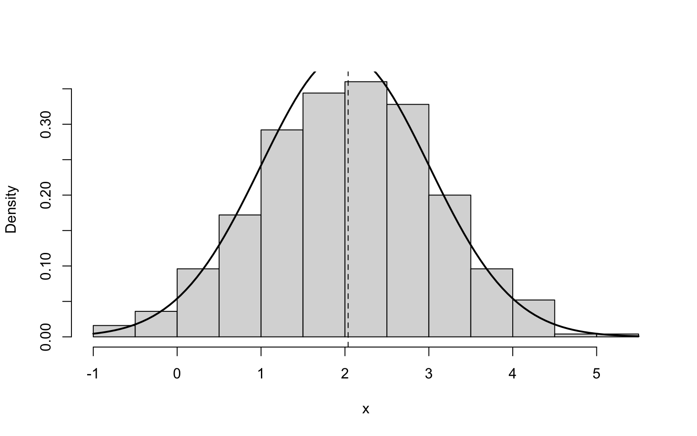

Appendix B Introduction to R
This appendix contains a short, self-contained reference to the R programming language as used in this module. We assume that the reader can execute commands in R and understand the output. We collect all R commands used in this module in one place, for the convenience of the reader. The aim is to provide enough information for the reader to not be held back by unfamiliarity with the R programming language.
Commands to be typed by the user are enclosed in a framed box, and the R output is shown below. Each line of the R output is marked with ## so that it can be distinguished from the input.
B.1 Getting Started
At Leeds the easiest way to run R is via the AppsAnywhere service, which provides access to RStudio on university machines, either in the cloud or using a remote desktop. No installation is required to use this method. Alternatively, to run R on your own computer, you can install the two free programs R from the Comprehensive R Archive Network at https://cran.r-project.org/ and RStudio Desktop from https://posit.co/download/rstudio-desktop/. RStudio provides a much more comfortable interface for using R. You need to install R first, before you can install RStudio.
Once RStudio is open, the large pane on the left is the console. This is where we type a command and see the result immediately. For simple calculations, the console is enough, but for anything we want to store or re-run later, we have to type the commands into a script, a plain text file, which we can open by clicking File > New File > R Script. We can then send individual lines of this file to the console, and we can save the whole file to disk.
Using the console is like using a calculator: we type an expression, and R prints the result.
The [1] at the start of the output is a position marker, not part of the answer: it says that the first value printed on that line, here , is the first element of the result. For a single number this looks redundant, but it helps once a result consists of many values spread out over several lines, because then each line starts with the index of the first value on that line.
To store a value for later use, we assign a name to it using the arrow <-, and we can later type the name to see the value. A list of numbers can be built using c, which combines values to form a vector.
Assignments to x do not print anything (this is intentional). If we type x on its own, R prints the five values. If we type mean(x), R prints the average of the five values.
You will learn many commands, but it is impossible to remember them all. Every built-in function has a help page, which can be accessed by typing a question mark before the function name.
The page always has the same structure: the Usage block shows how to call the function, the Arguments block shows what each input argument does, and the Examples block at the bottom shows lines which can be copied into the console to see the function in action. The structure of a help page is the key to understanding an unfamiliar command. For example, if you are asked to use a function which you have never seen before, e.g. the exponential random-number generator, you can type ?rexp to get the line rexp(n, rate = 1). This line explains that the function is called rexp, takes a count n as its first argument, and has a ‘rate’ argument with a default value. Once you have learned how to read a help page, you will find that this approach is more useful than trying to memorise individual commands.
B.2 Vectors and Arithmetic
Most quantities we consider here are vectors, i.e. ordered sequences of numbers, constructed using the R command c. We can access elements of a vector by specifying either a single index or a range of indices. We can also select elements based on a condition. In the following code, all the text after the single # on each line is a comment, ignored by R. We use comments to explain what each line of code does.
Arithmetic on vectors is an operation which acts on all elements simultaneously. As a result, loops over the elements of a vector are rarely needed.
Other functions operate on a vector to compute a single value. The most useful of these are length and sum, which return the count and the total, respectively, and the standard descriptive statistics.
The functions var and sd compute the sample variance, using the divisor , and the square root of the sample variance, known as the sample standard deviation. The command summary can be used to print several of these values.
The command quantile can be used to compute sample quantiles. By default the result includes percentage labels, as shown in the output of summary, but if the argument names = FALSE is used, the labels are omitted. This is useful if the values are to be used in later computations.
Results for different settings are often best read in tabular form. The commands cbind and rbind can be used to construct tables from vectors, by specifying the vectors as columns and rows, respectively. Names given in the call to either of these commands are used as column or row labels, respectively.
The command cor can be used to compute the correlation of two vectors. A covariance matrix can be converted into the corresponding matrix of correlations by cov2cor, which is how we read the correlation of two estimates off a numerical fit.
Some of the data sets which come with R are stored as a data frame, a table whose columns have names. The command with can be used to compute with those columns without naming the table each time.
B.3 Lists
A vector holds values of one kind, and arithmetic can be performed on all values at once. A list is a second basic container which can hold objects of different kinds and different lengths, e.g. a number, a vector, a matrix, or even a piece of text. Usually a list is provided with names for its parts. An entry of a list is accessed by name, using a dollar sign followed by the name.
The command names can be used to see which parts a list has, and str prints a compact summary of the whole list, giving the kind and the size of each part.
A part of a list can be used like an ordinary value of its type: fit$data is an ordinary vector, so we can use length(fit$data) to get the length of the vector as , and all the rules from the previous section apply to this vector. Arithmetic is not possible on the list as a whole, e.g. fit * 2 is an error, since a list can contain parts which do not make sense when multiplied.
Lists are useful because many R commands return a list. For example, a command which fits a model returns an estimate, an uncertainty measure, and some information about the computation, all in a list. We can then take the relevant part of the list. In the section about numerical maximum likelihood, below, optim returns the results in a list and the estimate can be found as fit$par.
B.4 Random Numbers and Distributions
The basis of simulation is the use of random numbers. The names of the distribution functions in R are constructed using the following scheme: a one-letter prefix, followed by the name of the distribution. For the normal distribution (norm) the corresponding prefixes are r for random samples, d for the density, p for the cumulative distribution function and q for the inverse of the cumulative distribution function, i.e. the quantile function.
Since the simulation should be repeatable, we first have to fix the state of the random-number generator. This can be done by calling set.seed with a fixed seed.
The following three prefixes answer the usual kind of questions about the same distribution.
The same four prefixes can be used for most standard distributions: instead of norm we can write binom, pois, exp, gamma and so on. Thus, for a task which requires binomial or geometric draws, it is easy to write rbinom or rgeom and then just look at the parameters listed on the help page. The geometric distribution illustrates the need to read the help page: authors disagree on whether the geometric distribution counts the number of trials until the first success, or the number of failures before the first success. These notes count the number of trials, so that the support of the distribution in table A.1 starts at . In contrast, the help page for rgeom states that R counts the number of failures and thus starts the output at and is one below our sequence. To compensate for this, we can use the command rgeom to simulate the geometric distribution from these notes by adding one to each of the generated values.
B.5 Writing Your Own Code
A simulation repeats the same steps many times, so we can combine these steps into a function and then call this function as needed. The inputs of a function are given in brackets, and the output is the value of the last line of the function.
To repeat a command several times, we can use a for-loop, where we store the results in a vector.
The function replicate can be used to do the same thing in one line. This is the most commonly used tool for this purpose.
We used seq_len(5) instead of 1:5 above. While both forms work for positive numbers, the difference becomes apparent when the count may be zero: 1:0 counts down and returns two values, whereas seq_len(0) is empty and a loop over it does nothing (the correct behaviour). Using seq_len in this way avoids a subtle bug.
A function often has to be applied to each element of a vector, for example to compute an estimate for each of several parameter values. The command sapply can be used for this: it applies the function to every element and collects the results in a vector. The function can be written directly inside the call, without being given a name.
The three values estimate the means , which are , and .
Some computations depend on the input and may take either of two forms. We can use the construction if (condition) a else b to select one of two values depending on the condition. The result of this construction is a value, so we can assign it to a variable or return it from a function.
The value returned by a function is normally the value of the last line, but the command return can be used to exit the function earlier. A common use of this command is to put a ‘guard’ at the top of a function which takes care of special cases not handled by the rest of the function. For example, in lecture 18, we will need a function which is to be minimised, but which refuses negative parameter values.
B.6 Estimation by Simulation
We can study an estimator without any algebra, by simulating a large number of samples, computing the estimate for each sample, and then summarising the results. This is the Monte Carlo method. We will consider an example where we estimate the mean of a normal distribution using the sample mean, where and samples of size .
The vector estimates now contains 2000 sample means. We can take the average of these values to get an estimate of the truth, and the difference between the average and the truth is a measure of the bias of our estimator. Another measure of the quality of our estimator is the mean squared error, which we can estimate by taking the average of the squared differences between the estimates and the truth. For this estimator we know the exact value , so we can use this value to check our estimate of the mean squared error.
A similar approach can be used to estimate a probability. A logical condition, e.g. abs(estimates - mu) <= 0.5, results in a vector of true and false values. Since R interprets these values as ones and zeros, the average of these values is the proportion of true values.
This idiom, the mean of a condition, can be used to estimate any probability by simulation, e.g. how often a confidence interval covers the truth.
To watch an estimate settle as data accumulate, cumsum can be used to compute the running totals, and the running mean is then the quotient of the running total and the running count.
The running mean of the samples converges to as the number of samples increases.
A simulated answer is only as good as the code behind it, and the usual failure is a plausible but wrong number instead of an error message. Two cheap habits can help to avoid this: try a small case first, and check the result against something known. For example, the mean of many standard normals should be close to zero.
There are two more idioms which come up repeatedly in the R sessions. First, if the expression to replicate returns a vector instead of a single number, e.g. the two ends of an interval, the result is a matrix where there is one column for each repetition, and one can select a row of this matrix using ci[1, ]. Secondly, if a loop is iterating through different settings, e.g. a vector ns of sample sizes, one can use seq_along(ns) to get the counter values for the positions in the vector, and one can use data.frame to summarise the results in tabular form.
To summarise the contents of such a matrix row by row, one can use apply: the call apply(ci, 1, mean) applies the mean function to each row of the matrix (the 1 indicates that we want to operate on the rows, 2 would indicate the columns), i.e. this computes the average of the lower and upper ends of the four intervals. For means and sums specifically, R provides rowMeans, colMeans, rowSums and colSums, which do the same job more directly and are used by us when the summary is one of these four.
B.7 Plotting, and Getting Results into a Report
We can use plots to inspect data and results. The main functions used to create plots are hist (for histograms), plot (for points or lines) and curve (for plotting a function). The functions abline (to add a straight line) and lines (to add a curve) can be used to add to an existing plot. As an example, we consider the histogram of a sample, together with the density of the sample and the sample mean.
To compare the density to the histogram, we set freq = FALSE to put the histogram on a density scale and add = TRUE to plot the curve on top of the histogram. The result is shown in figure B.1.

To assess whether data are normally distributed, the function qqnorm can be used to plot the sorted values against normal quantiles. If the points lie close to a straight line, the data are approximately normally distributed.
To include the plot in a report, we have to save it to a file. We can open a file for graphics output using pdf (or png) and then use dev.off to close the file and indicate that all the output should go to the file instead of to the screen.
In RStudio we can use the Export button above the plot pane to save the current figure. Numbers from the console can be copied and pasted into the report as they appear, and if we store the commands in a script, we can re-run the script to get the exact same result.
B.8 Numerical Maximum Likelihood
For many models the likelihood equation cannot be solved by hand, and we have to find the maximum likelihood estimate numerically. The tool we use here is the optim function from R, which minimises a function. This means that we have to give the negative of the log-likelihood function as an argument. As an example we consider here a gamma sample with known rate and unknown shape parameter. For this example, the maximum likelihood estimate cannot be found analytically.
A command like optim returns its results in a list. The individual results can be accessed by name, using a dollar sign as in fit$par above. In our experiment we use the starting value par, the method "BFGS" and hessian = TRUE, so that optim also returns the matrix of second derivatives of the negative log-likelihood at the optimum. This matrix is called the observed information. In the R command below, we use solve to invert this matrix and the square root of the diagonal elements to compute approximate standard errors. These can be used to compute a Wald confidence interval.
The estimate and its interval are close to the true shape , as expected. For a one-dimensional parameter, optimise is a simpler alternative to optim, which finds the minimum in an interval, but does not return the information.